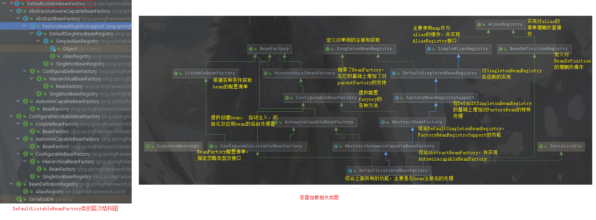
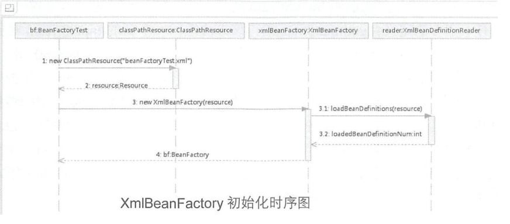
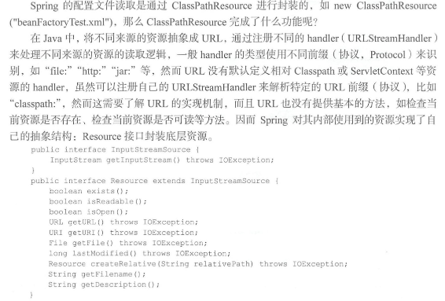
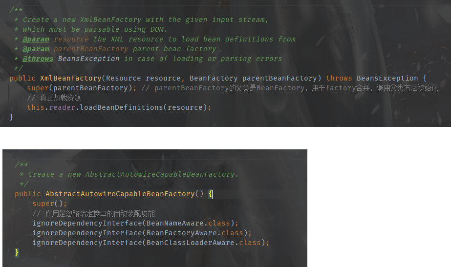
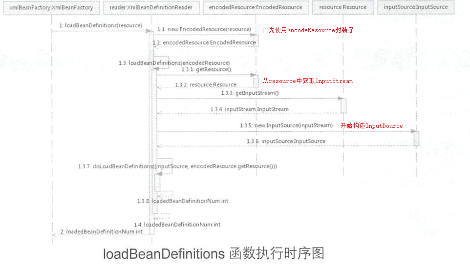
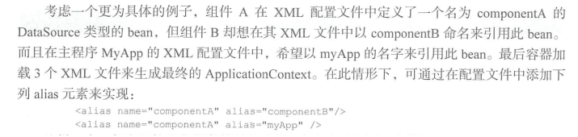
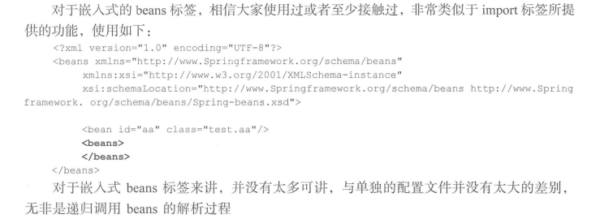
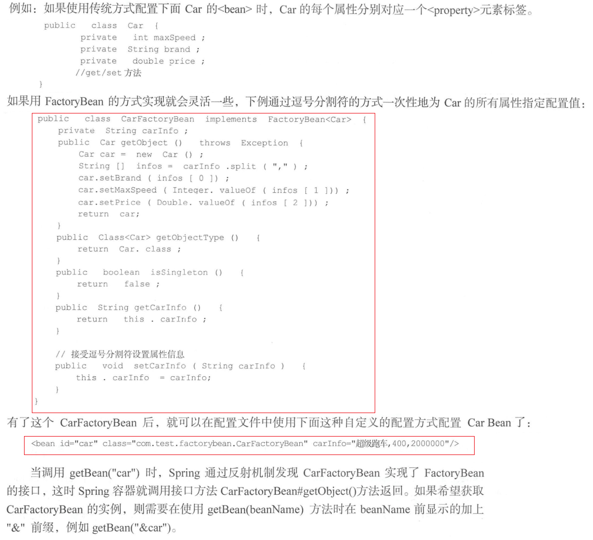

@Test
public void Test() {
BeanFactory bf = new XmlBeanFactory("xxx.xml");
User user = (User)bf.getBean("user");
Sting name = user.getName();
}






protected void processAliasRegistration(Element ele) {
// 获取beanName
String name = ele.getAttribute(NAME_ATTRIBUTE);
// 获取别名
String alias = ele.getAttribute(ALIAS_ATTRIBUTE);
boolean valid = true;
if (!StringUtils.hasText(name)) {
getReaderContext().error("Name must not be empty", ele);
valid = false;
}
if (!StringUtils.hasText(alias)) {
getReaderContext().error("Alias must not be empty", ele);
valid = false;
}
if (valid) {
try {
// 注册alias
getReaderContext().getRegistry().registerAlias(name, alias);
}
catch (Exception ex) {
getReaderContext().error("Failed to register alias '" + alias +
"' for bean with name '" + name + "'", ele, ex);
}
// 通知监听器注册完成了
getReaderContext().fireAliasRegistered(name, alias, extractSource(ele));
}
}
protected void importBeanDefinitionResource(Element ele) {
// 获取resource属性
String location = ele.getAttribute(RESOURCE_ATTRIBUTE);
// 如果不存在就不做任何处理
if (!StringUtils.hasText(location)) {
getReaderContext().error("Resource location must not be empty", ele);
return;
}
// Resolve system properties: e.g. "${user.dir}" 解析系统属性：例如“ $ {user.dir}”
location = getReaderContext().getEnvironment().resolveRequiredPlaceholders(location);
Set<Resource> actualResources = new LinkedHashSet<>(4);
// Discover whether the location is an absolute or relative URI 判断是绝对路径还是相对路径
boolean absoluteLocation = false;
try {
absoluteLocation = ResourcePatternUtils.isUrl(location) || ResourceUtils.toURI(location).isAbsolute();
}
catch (URISyntaxException ex) {
// cannot convert to an URI, considering the location relative//考虑到相对位置，因此无法转换为URI
// unless it is the well-known Spring prefix "classpath*:" //除非它是众所周知的Spring前缀“ classpath *：”
}
// Absolute or relative? 绝对还是相对？
if (absoluteLocation) {
try {
// 如果是绝对路径就直接根据地址加载配置文件
int importCount = getReaderContext().getReader().loadBeanDefinitions(location, actualResources);
if (logger.isTraceEnabled()) {
logger.trace("Imported " + importCount + " bean definitions from URL location [" + location + "]");
}
}
catch (BeanDefinitionStoreException ex) {
getReaderContext().error(
"Failed to import bean definitions from URL location [" + location + "]", ele, ex);
}
}
else {
// No URL -> considering resource location as relative to the current file. 没有URL->考虑相对于当前文件的资源位置。
// 如果是相对地址就根据相对地址算出绝对地址
try {
int importCount;
//Resource存在多个子实现类,如VfsResource, FilesystemResource等,
// 而每个resource的createRelative方式实现都不一样,所以这里先使用子类的方法尝试解析
Resource relativeResource = getReaderContext().getResource().createRelative(location);
if (relativeResource.exists()) {
importCount = getReaderContext().getReader().loadBeanDefinitions(relativeResource);
actualResources.add(relativeResource);
}
else {
// 如果解析不成功就使用默认的解析器ResourcePatternResolver进行解析
String baseLocation = getReaderContext().getResource().getURL().toString();
importCount = getReaderContext().getReader().loadBeanDefinitions(
StringUtils.applyRelativePath(baseLocation, location), actualResources);
}
if (logger.isTraceEnabled()) {
logger.trace("Imported " + importCount + " bean definitions from relative location [" + location + "]");
}
}
catch (IOException ex) {
getReaderContext().error("Failed to resolve current resource location", ele, ex);
}
catch (BeanDefinitionStoreException ex) {
getReaderContext().error(
"Failed to import bean definitions from relative location [" + location + "]", ele, ex);
}
}
Resource[] actResArray = actualResources.toArray(new Resource[0]);
// 通知监听器注册完成了
getReaderContext().fireImportProcessed(location, actResArray, extractSource(ele));
}


protected Object getSingleton(String beanName, boolean allowEarlyReference) {
// Quick check for existing instance without full singleton lock 快速检查现有实例，而无需完全单例锁定
// 1. 检查singletonObjects缓存中是否有实例 singletonObjects：beanName -》 beanInstance
Object singletonObject = this.singletonObjects.get(beanName);
if (singletonObject == null && isSingletonCurrentlyInCreation(beanName)) {
// 2. singletonObjects中没有， 在从earlySingletonObjects中查询 earlySingletonObjects： beanName -》 beanInstance，
// 区别是当bean还在加载，就可以调用getBean获取，目的是用来检测循环引用
singletonObject = this.earlySingletonObjects.get(beanName);
if (singletonObject == null && allowEarlyReference) {
// 如果为空，就锁定全局变量并进行处理
synchronized (this.singletonObjects) {
// Consistent creation of early reference within full singleton lock
// 如果这个bean正在加载就不处理
singletonObject = this.singletonObjects.get(beanName);
if (singletonObject == null) {
singletonObject = this.earlySingletonObjects.get(beanName);
if (singletonObject == null) {
// 当某些方法需要提前初始化的时候则会调用addSingletonFactory方法将对应的
// ObjectFactory初始化策略储存在singletonFactories中
// 3. 再找不到就尝试从singletonFactories获取ObjectFactory
ObjectFactory<?> singletonFactory = this.singletonFactories.get(beanName);
if (singletonFactory != null) {
// 调用预先设定的getObject方法
// 4. 然后再调用getObject方法来创建bean
singletonObject = singletonFactory.getObject();
// 记录在缓存中 earlySingletonObjects和singletonObject互斥
this.earlySingletonObjects.put(beanName, singletonObject);
this.singletonFactories.remove(beanName);
}
}
}
}
}
}
return singletonObject;
}